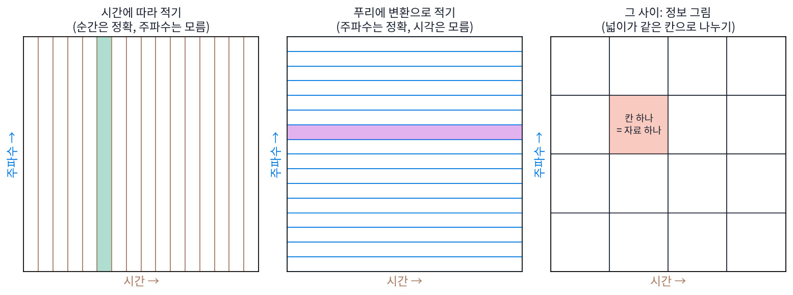
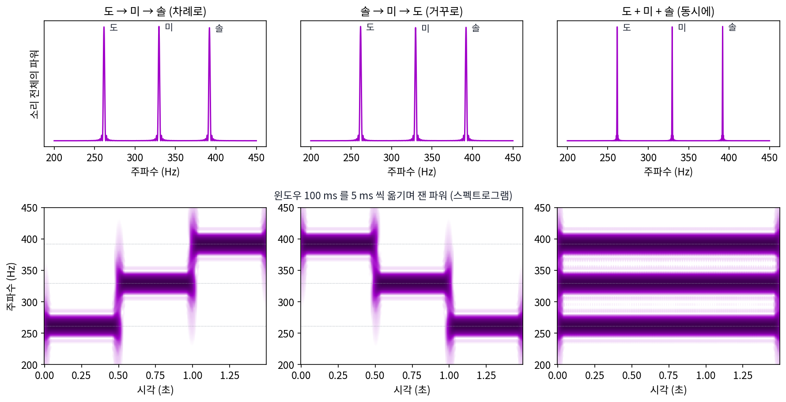
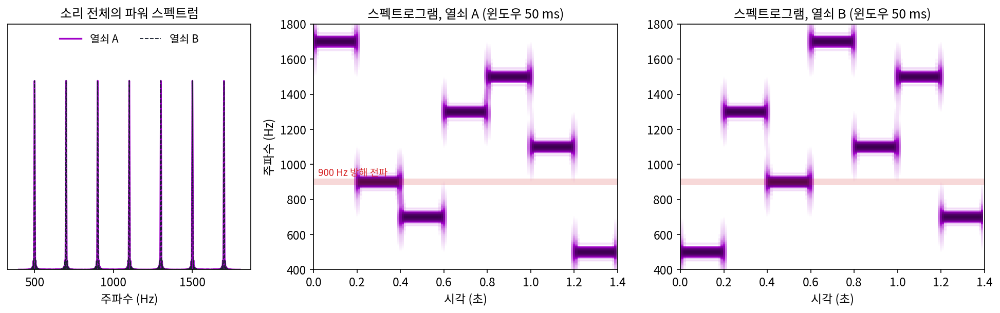
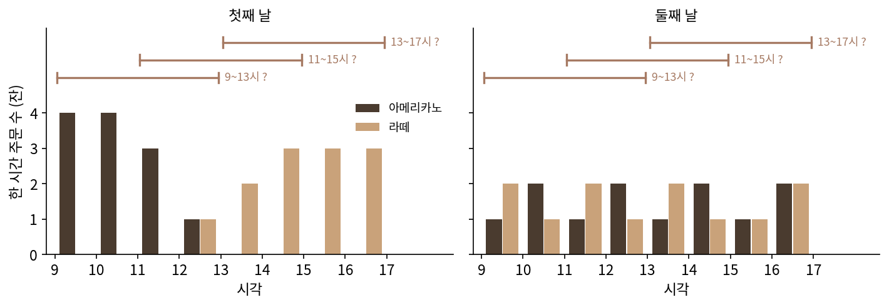
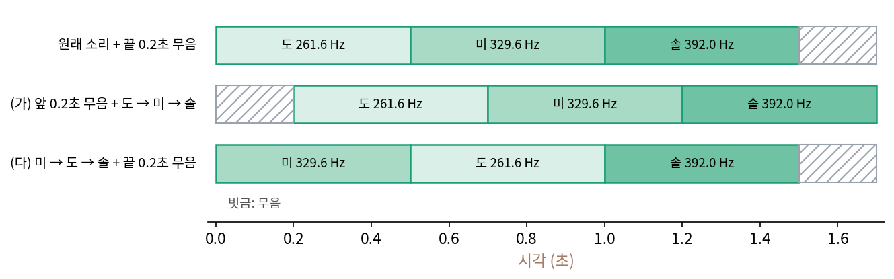
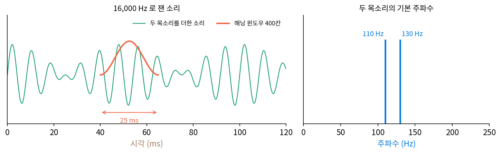
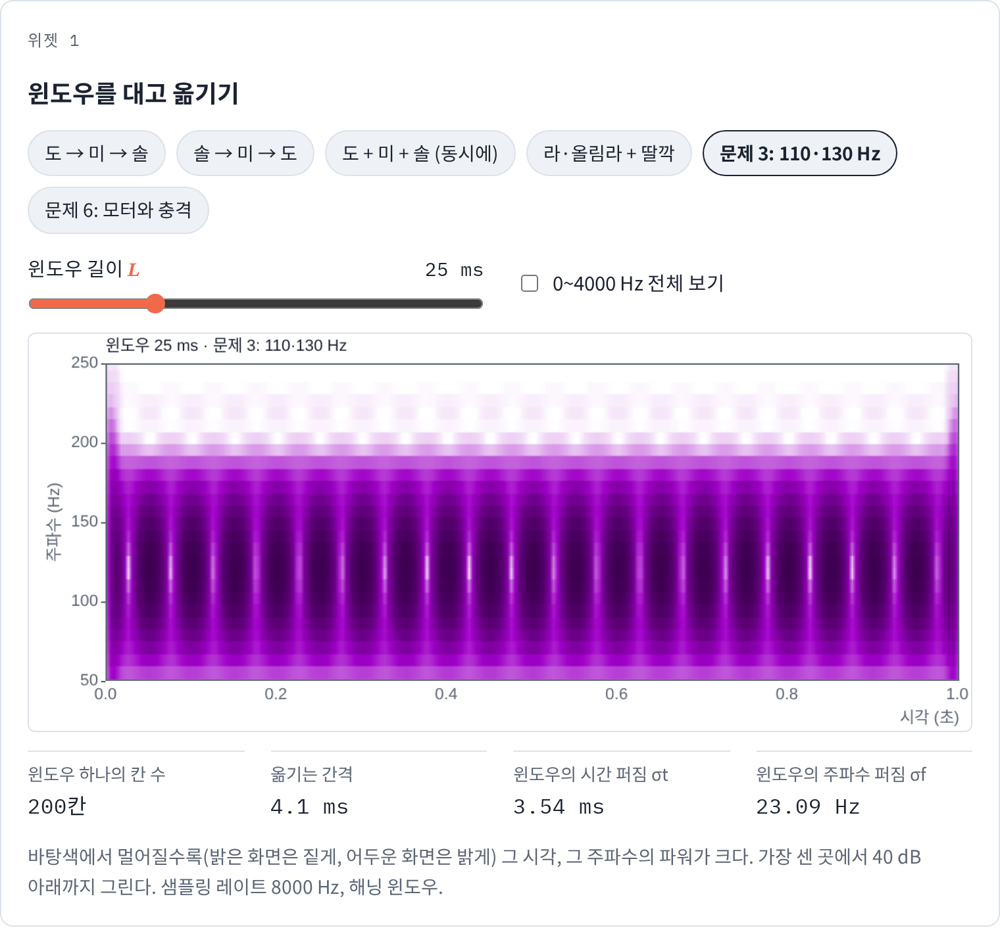

시간과 주파수를 함께: 단시간 푸리에 변환과 웨이블릿
이 장의 물음
칸 N개로 적은 신호는 이산 푸리에 변환(DFT)으로 물결 N개의 계수로 바꿀 수 있었고, 거꾸로 되돌릴 수도 있었다. 그때 다룬 신호는 처음부터 끝까지 같은 물결이 되풀이되었다. 그런데 노래는 음이 바뀌고, 말소리는 「아」에서 「이」로 넘어가고, 공장 기계는 멀쩡히 돌다가 어느 순간 덜컥 소리를 낸다. 휴대폰의 노래 찾기 앱은 몇 초짜리 녹음에서 어느 음이 어느 순간에 울렸는지를 읽어야 하고, 음성 받아쓰기 프로그램은 「가」와 「나」 가운데 어느 것이 먼저 나왔는지 알아야 한다.
ML에서도 같은 장면이 나온다. 음성 인식 모델 다수는 소리를 칸 그대로 받지 않고, 짧은 구간마다 잰 주파수별 파워(그 주파수 물결이 얼마나 센가, 계수 크기의 제곱)를 시간 순서대로 늘어놓은 그림을 입력으로 받는다. 소리 전체를 한 번에 물결로 나누면 안 될까, 왜 굳이 잘게 끊을까? 끊는다면 얼마나 길게 끊어야 할까?
이 장은 다음 물음에 차례로 답한다.
- 소리 전체의 스펙트럼에서 「이 음이 언제 울렸나」는 어디로 갔을까? 「언제」를 되찾으려면 어떻게 재야 할까?
- 구간을 짧게 끊을수록 시각은 또렷해진다. 그 대가로 무엇이 흐려질까? 둘 다 한없이 또렷하게 할 수는 없을까?
- 높은 음과 낮은 음에 같은 길이의 구간을 대야 할까? 음마다 구간 길이를 다르게 하면 무엇이 좋아질까?
단시간 푸리에 변환: 윈도우를 대고 옮기며 스펙트럼 재기
피아노로 도 → 미 → 솔을 0.5초씩 차례로 치고, 다음에는 솔 → 미 → 도로 거꾸로 쳐 보자. 귀에는 올라가는 가락과 내려가는 가락으로 분명히 다르게 들리고, 세 건반을 한꺼번에 눌러 1.5초 동안 울린 화음은 또 다르게 들린다. 세 소리를 각각 처음부터 끝까지 한 번에 이산 푸리에 변환에 넣으면 어떤 스펙트럼이 나올까?
샘플링 레이트 8000 Hz(1초에 8000번 재기)로 합성한 1.5초짜리 소리는 칸 12,000개다. DFT 의 주파수 빈(주파수 번호 하나가 맡는 칸) 간격은 0.667 Hz다. 세 소리 모두 봉우리가 261.6 Hz(도), 329.6 Hz(미), 392.0 Hz(솔) 세 곳에 서고, 세 봉우리 근처(±20 Hz)에 든 파워는 차례로 친 두 소리에서 각각 전체의 33.1%, 화음에서 33.3%다. 도 → 미 → 솔과 솔 → 미 → 도의 파워 스펙트럼은 가장 크게 어긋나는 곳에서도 봉우리 높이의 0.9%만 다르다. 화음은 봉우리 자리와 파워 비율이 같고 모양만 다르다. 세 음이 1.5초 내내 울리므로 봉우리가 세 배쯤 높고(높이 비 3.09), 절반 높이에서 잰 폭은 0.58 Hz로 0.5초씩 울린 음의 1.75 Hz보다 좁다.
소리 전체의 파워 스펙트럼은 「어떤 음이 얼마나 들어 있나」를 말해 주지만 「언제」는 말해 주지 않는다. 그렇다고 「언제」가 사라진 것은 아니다. DFT 는 되돌릴 수 있으므로 계수 12,000개 안에 가락의 순서가 모두 들어 있다. 들어 있는 자리는 계수의 위상(복소수 계수가 가리키는 각도)이다. 261.33 Hz 빈의 계수는 도 → 미 → 솔에서 −63.6°, 솔 → 미 → 도에서 177.0°를 가리킨다. 계수 하나하나는 1.5초 전체에 걸친 물결이라서, 「0.5초쯤 도가 끝났다」는 사실은 수천 개 계수의 위상이 함께 맞물려야 비로소 드러난다. 한 계수만 보고 시각을 읽을 수는 없다.
역사: 두 극단 사이의 기술법
1946년, 영국 럭비의 브리티시 톰슨–휴스턴 연구소에서 일하던 헝가리 출신 물리학자 가보르(Dennis Gabor)는 영국 전기공학회지(J. IEE) Part III 93권에 「통신 이론(Theory of communication)」을 냈다. 통신 신호를 어떻게 적을지 따지던 그는 신호를 적는 두 방법이 모두 한쪽 끝에 서 있다고 보았다. 시간에 따라 값을 적으면 순간마다의 값은 정확하지만 주파수가 보이지 않고, 푸리에 변환으로 적으면 주파수는 정확하지만 그 물결은 끝없는 과거에서 끝없는 미래까지 울리는 것으로 적힌다. 논문 요약은 시간에 따라 적기와 푸리에 변환으로 적기를 「시간 분석과 스펙트럼 분석이라는 두 극단」이라 부르고, 그 사이에 있는 새 기술법을 내놓는다고 썼다. 가로가 시간, 세로가 주파수인 평면에 신호를 그리는 그 그림을 그는 「정보 그림(information diagram)」이라 불렀다. 가보르는 이듬해인 1947년, 같은 연구소에서 전자 현미경의 상을 개선하려다 홀로그래피를 생각해 냈고, 그 일로 1971년 노벨 물리학상을 받았다.


가로가 시간, 세로가 주파수인 그림이면 그냥 스펙트로그램이잖아요. 지금은 torch.stft 한 줄이면 나오는데, 이게 1946년에는 새 기술법이었어요?

그 한 줄 안에 든 계산을 손으로 하면 얼마나 될지 세어 볼까요? 아래에서 도 → 미 → 솔 1.5초를 800칸 조각 150개로 나눠 조각마다 DFT 를 할 거예요.

조각 하나에서 계수 800개, 계수 하나에 곱셈 800번이니까 64만 번… 150조각이면 1억 번 가까이요.

1942년에 대니얼슨과 란초시는 칸 수를 늘려도 수고가 조금만 느는 요령을 쓰고도 손 계산으로 계수 64개에 140분쯤 걸렸다고 적었어요. 그 요령을 끝까지 밀어붙인 고속 푸리에 변환은 1965년에야 논문으로 나왔고요.

그러면 가보르는 자기 평면을 숫자로 가득 채워 볼 수가 없었겠네요. 어떤 칸에 무엇이 찍힐지는 식으로 따져야 했고요.
그래서 그의 논문은 평면을 어떻게 나눌 수 있는지부터 따져요. 지금 우리는 계산을 기계에 맡기고, 그 평면을 바로 그려 볼 수 있어요.

그럼 평면을 채우는 가장 쉬운 방법은 소리를 짧게 잘라 조각마다 DFT 를 하는 건가요? 그런데 자른 끝에서 값이 뚝 끊기는 건 괜찮아요?
윈도우 100 ms 를 10 ms 씩 옮기기
가보르의 평면을 숫자로 채우는 가장 단순한 방법은 소리를 짧게 잘라 조각마다 DFT 를 하는 것이다. 도 → 미 → 솔에서 0.1초(800칸)씩 잘라 보자. 자른 끝에서 값이 뚝 끊기면 없던 주파수가 생기므로, 가운데는 1이고 양 끝으로 갈수록 0으로 내려가는 무게(해닝 윈도우, 코사인 한 주기로 만든 종 모양)를 곱한 뒤 DFT 를 한다. 그 조각을 10 ms(80칸)씩 뒤로 옮기며 되풀이하면 1.5초 동안 조각이 150개 나온다. 조각마다 세 음의 주파수 빈 파워를 비교하면 아래와 같다.
| 조각 가운데 시각 | 도 → 미 → 솔 (도·미·솔 파워 비) | 솔 → 미 → 도 | 도 + 미 + 솔 |
|---|---|---|---|
| 0.25초 | 1.00 · 0.00 · 0.00 | 0.00 · 0.00 · 1.00 | 0.33 · 0.33 · 0.33 |
| 0.75초 | 0.00 · 1.00 · 0.00 | 0.00 · 1.00 · 0.00 | 0.33 · 0.33 · 0.33 |
| 1.25초 | 0.00 · 0.00 · 1.00 | 1.00 · 0.00 · 0.00 | 0.33 · 0.33 · 0.33 |
소리 전체로 잰 스펙트럼에서 거의 같았던 세 소리가 이제 확실히 갈린다. 도 → 미 → 솔에서 가장 센 음이 도에서 미로 바뀌는 조각은 가운데 시각 0.51초, 미에서 솔로 바뀌는 조각은 1.01초다. 실제로 음이 바뀐 0.5초와 1.0초에 10 ms 안쪽으로 맞는다.

조각에 곱한 무게를 윈도우 w(n)이라 하고, 윈도우를 H칸씩 옮기며 조각마다 DFT 를 하는 계산을 단시간 푸리에 변환 (윈도우를 대고 옮기며 재는 스펙트럼 / short-time Fourier transform, STFT)이라 한다. 조각마다 나온 파워를 세로로 세우고 시간 순서대로 가로로 늘어놓은 그림이 위의 아래 줄이고, 이 그림을 스펙트로그램이라 부른다.
윈도우가 N칸이면 주파수 빈 간격은 샘플링 레이트를 N으로 나눈 값이다. 윈도우 25 ms(200칸)면 40 Hz, 100 ms(800칸)면 10 Hz, 400 ms(3200칸)면 2.5 Hz 간격이어서, 윈도우를 길게 잡을수록 주파수 빈이 촘촘해진다. 그 대가로 무엇을 잃는지는 다음 개념에서 따진다.
주파수 도약: 순서를 아는 쪽만 알아듣는 무선
전쟁 영화에서 무전기가 지지직거리기만 하고 먹통이 되는 장면이 나온다. 상대가 같은 주파수에 센 전파를 쏘아 덮어 버리는 방해, 재밍이다. 1941년 6월, 배우로 알려진 헤디 라마(Hedy Lamarr, 특허에는 Hedy Kiesler Markey)와 작곡가 조지 앤타일(George Antheil)이 이 문제를 피하는 장치를 미국 특허로 출원했다(1942년 8월 등록, 미국 특허 2,292,387 「비밀 통신 장치」). 무선으로 조종하는 어뢰는 적이 조종 주파수를 찾아내 가짜 신호를 보내면 쉽게 막힌다. 그래서 송신기가 주파수를 아무렇게나 정한 순서로 바꿔 가며 보내고, 그 순서는 송신기와 수신기에 하나씩 둔 같은 구멍 뚫린 종이 띠만 알게 했다. 두 띠는 같은 빠르기의 태엽 모터로 돌고, 특허는 자동 피아노 두루마리의 88줄을 쓰면 주파수 88개도 쓸 수 있다고 적었다. 이렇게 정해 둔 순서로 주파수를 옮겨 가며 보내는 방법을 주파수 도약이라 한다.
주파수 도약을 숫자로 따라가 보자. 주파수 7개(500 Hz부터 1700 Hz까지 200 Hz 간격) 사이를 0.2초마다 옮겨 1.4초 동안 보낸다. 열쇠 A의 순서는 1700 → 900 → 700 → 1300 → 1500 → 1100 → 500 Hz이고, 열쇠 B는 같은 일곱 주파수를 500 → 1300 → 900 → 1700 → 1100 → 1500 → 700 Hz로 쓴다. 1.4초를 통째로 DFT 하면 두 소리 모두 일곱 주파수 근처(±20 Hz)에 파워가 14.0%씩 들고, 두 파워 스펙트럼은 가장 크게 어긋나는 곳에서도 봉우리 높이의 1.6%만 다르다. 도 → 미 → 솔과 솔 → 미 → 도를 구별하지 못했던 것과 같아서, 전체 스펙트럼만 보면 어떤 주파수를 쓰는지는 알아도 순서는 모른다. 윈도우 50 ms(400칸, 빈 간격 20 Hz)를 10 ms씩 옮기며 단시간 푸리에 변환을 하면 순서가 드러난다. 도약마다 가운데 시각에서 가장 센 빈을 읽으면 1699, 898, 699, 1301, 1500, 1102, 500 Hz로, 일곱 도약 모두 열쇠 A와 2 Hz 안쪽으로 맞는다.

방해 전파가 900 Hz 하나만 막으면 일곱 도약 가운데 하나, 14%만 막힌다. 일곱 주파수를 모두 막으려면 방해 전파의 힘을 일곱으로 나눠 주파수마다 1/7씩만 쏘게 된다. 다음 도약을 미리 알면 그 주파수에 힘을 모을 수 있을 텐데, 그 순서는 전체 스펙트럼에 드러나지 않고 윈도우를 대고 옮겨야 읽히며, 그렇게 읽은 순서도 이미 지나간 도약의 것이다. 도약이 빨라질수록 순서를 읽기도 어려워진다. 10 ms마다 옮겨 다니면 윈도우도 10 ms(80칸) 안쪽이어야 도약 하나를 따로 볼 수 있는데, 그러면 빈 간격이 100 Hz로 벌어져 200 Hz 떨어진 이웃 주파수를 겨우 가른다. 짧은 도약과 촘촘한 주파수를 함께 또렷하게 읽을 수 있는지는 다음 개념에서 따진다.
ML에서: Whisper 가 받는 소리
오픈AI 가 2022년에 공개한 음성 인식 모델 Whisper 는 소리를 칸 그대로 받지 않는다. 공개 코드(whisper/audio.py)는 소리를 1초에 16,000칸으로 맞추고, 길이 400칸(25 ms)의 해닝 윈도우를 160칸(10 ms)씩 옮기며 torch.stft 로 단시간 푸리에 변환을 하므로 이웃한 두 윈도우는 60%가 겹친다. 입력 한 덩어리는 30초, 칸 480,000개다. 윈도우 하나에서 주파수 빈이 0 Hz부터 8000 Hz까지 201개 나오고, 조각은 3001개가 나오는데 코드가 마지막 하나를 버려 3000개가 된다. 이 파워 201개를 귀의 음높이 눈금에 맞춰 80개(2023년에 나온 large-v3 판은 128개)로 묶고 로그를 씌운 것이 모델의 입력이다. 모델이 보는 것은 시간 칸 3000개 × 주파수 칸(멜 채널) 80개짜리 그림이다.
문제 1. 카페의 하루 주문 기록
카페 하나가 9시부터 17시까지 한 시간마다 아메리카노와 라떼 주문 수를 적었다. 첫째 날 아메리카노는 [4, 4, 3, 1, 0, 0, 0, 0], 라떼는 [0, 0, 0, 1, 2, 3, 3, 3]이고, 둘째 날 아메리카노는 [1, 2, 1, 2, 1, 2, 1, 2], 라떼는 [2, 1, 2, 1, 2, 1, 1, 2]다. (가) 두 날의 하루 합계를 비교하라. (나) 4시간 묶음을 2시간씩 옮기며(9~13시, 11~15시, 13~17시) 합계를 내면 두 날이 어떻게 달라 보이는가? (다) 묶음을 8시간으로 늘리면 어떻게 되는가?

(가)는 둘 다 아메리카노 12잔, 라떼 12잔이에요. 똑같은 날이네요.
사장님이 두 날 모두 같은 순서로 원두와 우유를 준비하면 될까요?

아… 첫째 날은 오전에 아메리카노만 나가고 오후에 라떼만 나갔어요. 합계만 보고는 그걸 몰라요.

(나)를 하면 보여. 첫째 날은 9~13시 아메리카노 12 라떼 1, 11~15시 4와 6, 13~17시 0과 11. 둘째 날은 세 묶음 모두 6과 6이야.
(다)는요?
8시간이면 묶음이 하루 전체 하나라서… 다시 12와 12, 두 날이 같아져요.
그럼 반대로 한 시간씩 묶으면 제일 좋은 거 아니에요?
한 시간 묶음 한 칸에는 몇 잔쯤 들어가죠?

서너 잔뿐이라 들쭉날쭉해요. 묶음이 길면 합계는 안정되는데 언제 팔렸는지가 사라지고, 짧으면 시간은 정확한데 숫자가 흔들려요.

소리 전체 스펙트럼이 하루 합계고, 단시간 푸리에 변환이 4시간 묶음이네요. 품목이 주파수고요.
문제 2. 늦게 시작한 가락, 순서를 바꾼 가락
도 → 미 → 솔(1.5초) 앞에 0.2초 동안 아무 소리도 없는 구간을 붙여 1.7초짜리 소리를 만들었다. (가) 원래 소리도 끝에 0.2초 무음을 붙여 1.7초로 맞춘 뒤 두 소리를 DFT 하면, 파워 스펙트럼은 어떻게 다른가? (나) 주파수 f Hz 빈의 계수는 위상이 얼마나 바뀌는가? (다) 미 → 도 → 솔로 순서만 바꾼 소리의 파워 스펙트럼은 원래 도 → 미 → 솔과 같은가?

(가)는 소리가 0.2초 밀렸을 뿐이니까 계수마다 같은 크기의 화살표가 돌기만 할 거예요. 파워는 같아요.
코드로 돌려 보니까 정말 같아요. 가장 큰 차이가 봉우리 높이의 2 × 10⁻¹⁶이라 계산기 반올림 수준이에요. (나)는… 0.2초면 f Hz 물결은 0.2f 바퀴만큼 늦게 출발하니까 위상이 −360° × f × 0.2 돌아요. 262.35 Hz 빈이면 −18,889°인데, 한 바퀴씩 빼면 −169.4°고 코드 결과도 −169.4°예요.
좋아요. 그럼 (다)도 같은 이유로 파워가 같을까요?
도, 미, 솔 조각을 자리만 바꿨으니까 조각마다 밀린 것뿐이잖아요. 그러면 같아야죠.

조각마다 미는 시간이 같나요? 도는 0.5초 늦게, 미는 0.5초 일찍 옮겼어요.
아, 조각마다 위상이 다른 만큼 돌아요. 도 물결의 계수는 도 조각에서만 오는 게 아니라 미, 솔 조각에서 번진 작은 꼬리도 더해지는데, 그 꼬리들이 서로 다른 각도로 돌면 더한 크기가 달라져요.

돌려 보니 가장 큰 차이가 봉우리 높이의 0.9%예요. 거꾸로 친 솔 → 미 → 도와 비슷한 크기고요. 전체를 한꺼번에 미는 건 파워를 하나도 안 바꾸고, 부분마다 다르게 미는 건 아주 조금 바꾸네요. 「언제」는 거의 다 위상에 들어 있었어요.

순서를 바꿔도 파워가 거의 그대로라는 성질을 거꾸로 써먹은 무선이 있었죠.
주파수 도약이요. 엿듣는 사람이 1.4초를 통째로 DFT 하면 열쇠 A와 열쇠 B 모두 일곱 봉우리에 14.0%씩, 차이는 봉우리 높이의 1.6%뿐이라 순서를 읽을 수 없어요. 순서는 위상에 들어 있고, 그걸 시각으로 꺼내려면 윈도우를 대고 옮겨야 하고요.

해석학 시간에 푸리에 변환의 평행이동 성질을 증명할 때 왜 절댓값만 남기면 성질이 깔끔해지는지 궁금했는데, 시각 정보가 위상으로 빠져나가서였네.
문제 3. Whisper 의 윈도우로 두 목소리 가르기
두 사람이 동시에 「아」 소리를 내는데, 한 사람의 목소리 높이(기본 주파수)는 110 Hz, 다른 사람은 130 Hz다. (가) Whisper 의 윈도우(16,000 Hz에서 400칸)로 단시간 푸리에 변환을 하면, 주파수 빈 간격은 몇 Hz 인가? (나) 두 목소리의 봉우리가 갈라져 보이겠는가? (다) 옮기는 간격을 10 ms 에서 20 ms 로 늘리면 30초 입력의 시간 칸은 몇 개가 되는가? (위젯 1의 「문제 3: 110·130 Hz」로 윈도우 길이를 바꿔 가며 확인해 보자.)

(가)는 16,000 ÷ 400 = 40 Hz예요. (다)는 30,000 ms ÷ 20 ms = 1500개고요. (나)는 110과 130이 다른 빈에 들어가는지 보면 돼요. 110은 80 Hz 빈과 120 Hz 빈 사이, 130은 120 Hz 빈과 160 Hz 빈 사이니까 서로 다른 빈 사이에 있어요. 갈라지겠죠.
위젯으로 윈도우 25 ms 를 대 봐요. 줄이 몇 개 보이나요?

하나예요. 110과 130 사이에 굵은 띠 하나가 있어요. 빈이 다른데 왜 하나죠?
빈 간격은 빈의 자리만 정하는 거야. 봉우리 하나가 얼마나 넓게 번지는지는 따로야. 해닝 윈도우가 25 ms 면 봉우리가 양옆으로 두 빈씩, 80 Hz 정도 번져. 20 Hz 떨어진 두 봉우리는 그 안에서 겹쳐.
가운데 120 Hz 의 파워를 110 Hz 의 파워로 나눠 보면 어떤 값이 나오는지, 윈도우를 늘려 가며 재 봐요.

25 ms 에서 1.07, 100 ms 에서 1.00이라 가운데가 오히려 세요. 200 ms 에서 거의 0으로 떨어지면서 두 줄로 갈라져요. 20 Hz를 가르려면 윈도우가 1/20초 = 50 ms 보다는 훨씬 길어야 하네요.
그런데 윈도우를 200 ms 로 늘리면, 「아」에서 「이」로 바뀌는 순간은 그만큼 흐려지지 않을까?
문제 1(카페의 하루 주문 기록)과 같은 구조네요. 묶음을 8시간으로 늘리니까 합계는 안정됐는데 언제 팔렸는지가 사라졌잖아요. 윈도우를 늘리면 주파수는 갈라지는데 「언제」가 흐려지고요.
